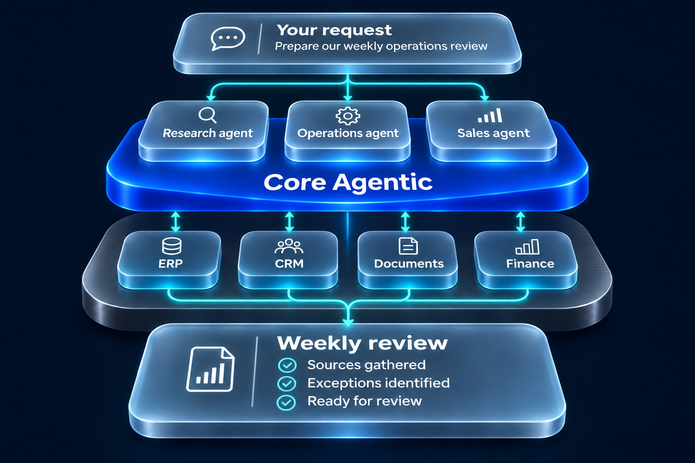
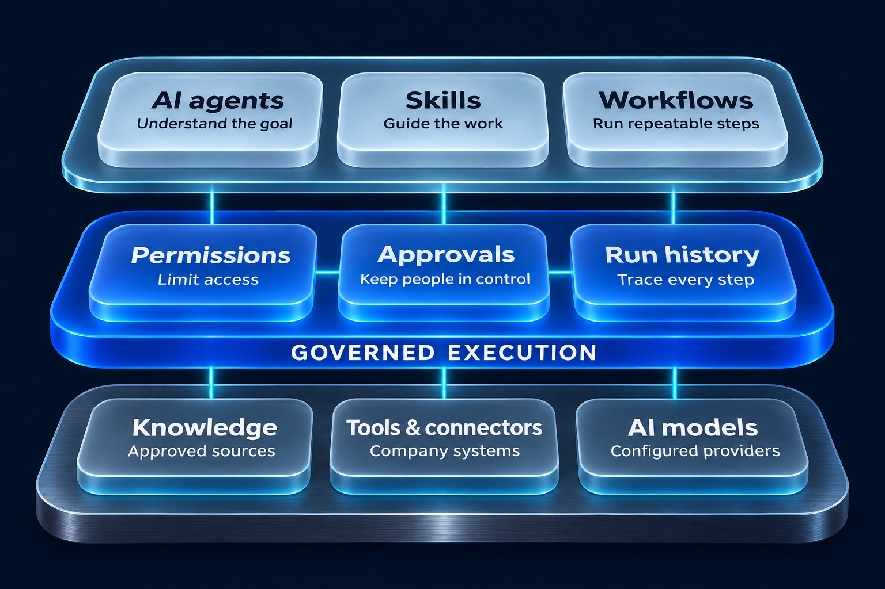
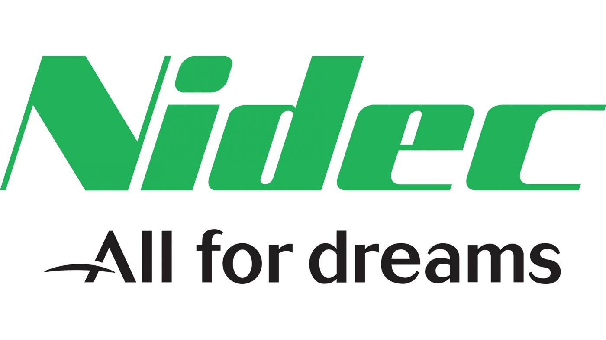
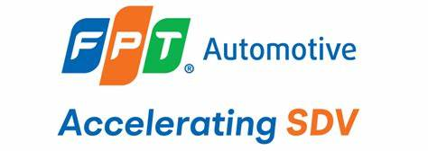
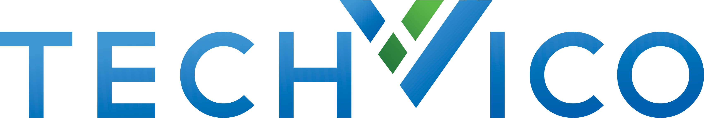
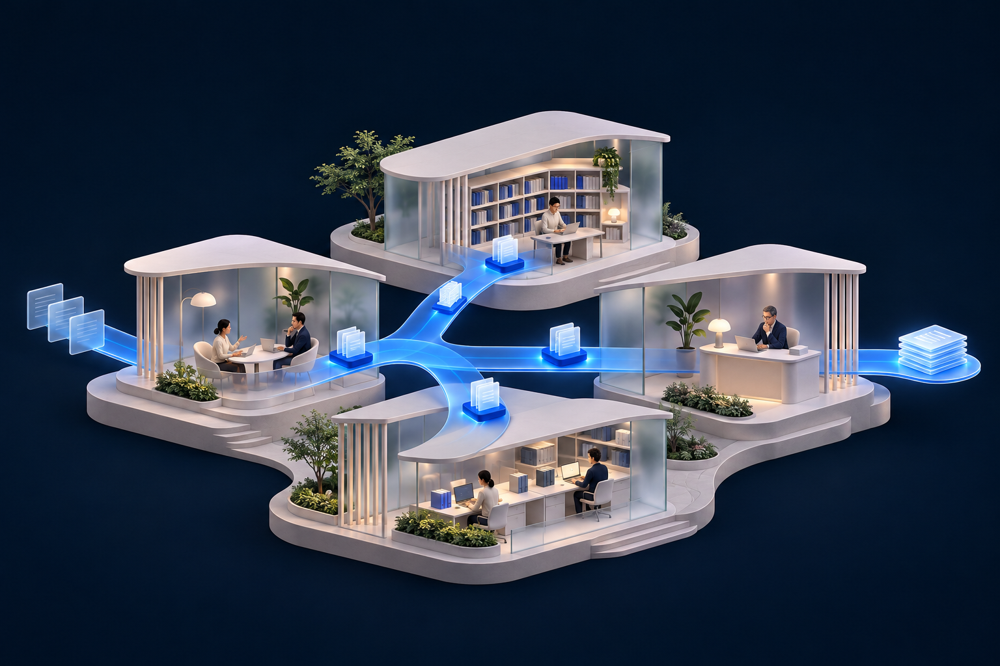

Accepted output
÷Team hours

Core Agentic by Primitive AI
A fleet of AI agents, connected to your knowledge, systems, and workflows.
Handle sales, research, and everyday operations with less manual effort.
The work between your systems
Knowledge is scattered. Routine tasks repeat. Every handoff adds more coordination to the day.
The value to your organization
Measure what your team can complete, and what each accepted result actually costs.
Cost perspective
A simple example makes the trade-offs visible—including the human review AI still needs.
The question is not “How much AI?”
It is “What does an accepted result take?”
Illustrative assumptions, not a customer result. Validate against your own workflow and outcome quality.
One shared architecture
Everything works together.
Every workflow can be different.

Flexible requests and repeatable processes, working together.
Access checks, human approvals and a shared execution history.
Approved knowledge, company systems and configured AI providers.
Customer experience
Our work has grown through collaboration with teams across industries and institutions.




 National Economic University (NEU)
National Economic University (NEU)

How we work
One shared journey from a costly bottleneck to useful, measurable work.
Understand the bottleneck with the people doing the work.
Agree the scope, approved data and success measures.
Use your information, workflow and team expertise.
Review output quality, effort and operating economics.
Prepare ownership, team training and ongoing support.
Apply the learning to adjacent teams and workflows.
Bring a workflow worth improving.A process owner, approved information and an outcome you want to change.
Trust you can see in the work
Give AI useful work. Keep the decisions that matter with your team.
Here is a response based on your approved product information.
Please confirm the price and delivery date before this message is sent.
Illustrative workflow. Review points are agreed for each organization.
Our story
From industrial systems to practical AI, our work has focused on helping organizations use their people, knowledge and systems more effectively.
Computer vision and applied systems shaped an early focus on practical work.
Work across support, organizational knowledge and tailored applications.
A configurable platform to connect knowledge, agents, tools and review.
Custom AI Development
Tell us the task you want to make easier. We build a solution that fits how your team works.
Draft answers from your product information. Pass difficult questions to your team.
Find the right policy, document or project detail without asking around.
Use cameras to flag possible defects for your staff to inspect.
See what changed between versions and what needs a person’s review.
Examples of business problems we can help you solve.
Explore custom AI servicesLatest from Primitive AI

Design preview: sample headlines. The live section will show the three latest published updates with their real dates and article links.
Your next step
Where could your people spend less time coordinating—and more time moving the work forward?